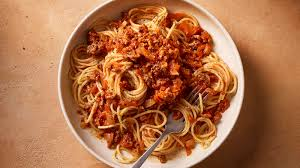

Home
Spaghetti Bolognese

Recipe
Spaghetti Bolognese is a classic Italian-inspired pasta dish featuring a rich, savory meat sauce served over tender spaghetti. The sauce is hearty and comforting, with deep tomato flavor balanced by herbs and slow-cooked beef.
It’s a timeless, everyday meal that’s filling, satisfying, and loved for its simplicity. Perfect for lunch or dinner, it’s a go-to recipe that works for both family meals and meal prep.
Ingredients
- Spaghetti
- Olive oil
- Onion
- Garlic
- Ground beef
- Tomato sauce or crushed tomatoes
- Tomato paste
- Salt
- Black pepper
- Oregano or Italian herbs
- Grated cheese
Steps
- Cook the spaghetti in salted water according to package instructions and drain.
- Heat olive oil in a pan and sauté chopped onion and garlic until soft.
- Add ground beef and cook until browned.
- Season with salt, pepper, and herbs.
- Stir in tomato paste and tomato sauce.
- Let the sauce simmer for 15–20 minutes.
- Serve the sauce over spaghetti and top with grated Parmesan.